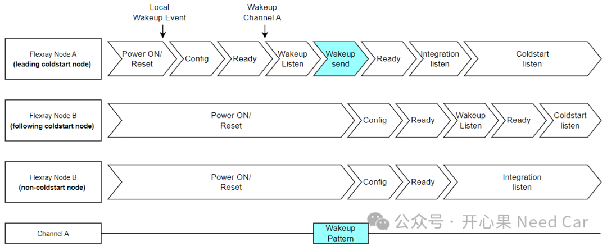
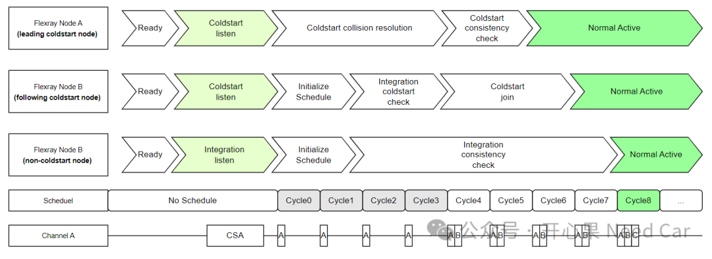
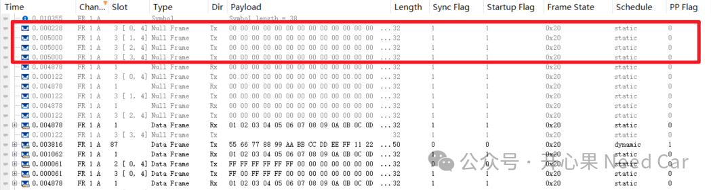

前文《Flexray总线基础#01：Flexray节点基本组成及唤醒》讨论了Flexray的基本元器件组成和部分唤醒话题。本文着重讨论Flexray的唤醒和启动话题。Flexray节点正常通信之前，类似CAN总线，需要满足一个条件：ECU唤醒，即：ECU唤醒是网络唤醒的前提。对于Flexray总线，问题同样适用，即：Flexray唤醒是Flexray节点有序启动的前提。
对于Flexray总线，根据参与启动时机不同，Flexray节点又分为两类：冷启动节点（Coldstart Node）、非冷启动节点（Non Coldstart Node）。其中，冷启动节点又分为：主动冷启动节点（Leading Coldstart Node）和随从冷启动节点（Following Coldstart Node）。在一个Flexray网络簇中，冷启动节点限制在一定数量。如果节点超过3个，为了确保通信稳定性，冷启动节点至少设置3个；如果Flexray网络簇仅有两个节点，那么，这两个节点均需要设置为冷启动节点。Flexray网络启动之前，需要确保网段内所有的节点已经唤醒。单通道（Channel A）的网络节点唤醒时序，示意如下：
首先，某个外部事件触发Flexray网络簇中的一个节点（eg：Node A）先唤醒，该事件一般指本地唤醒事件。当Node A唤醒以后，POC（Protocol Operation Control）状态切换，在Wakeup::Wakeup send子状态中发送Wakeup Pattern，以便于唤醒Channel A上的其他Flexray节点。此时，Flexray总线中，仅有唤醒帧，Flexray节点还未参与节点通信，如果节点间实现通信，还需完成启动步骤（Startup）。对于Flexray的启动（Stratup）主要包含两步：冷启动节点（coldstart nodes）先启动，非冷启动节点（non-coldstart nodes）加入冷启动节点参与通信。
当Flexray总线完成唤醒以后，意味着Flexray总线上的所有节点的主芯片已经处于工作模式，且软件已经运行。冷启动起点的POC状态切换到Coldstart listen状态，非冷启动起点的POC状态切换到Integration listen状态（整体监听状态），示意如下：


上图中，Node A属于主动冷启动节点。主动冷启节点（leading coldstart node）在POC::Coldstart listen状态下对连接的总线监听，并尝试接收Frames。如果总线没有活动，Node A进行冷启动尝试，随即发送冲突避免符（CAS，Collision Avoidance Symbol）。注意，只有冷启动节点可以发送CAS。为什么要发送CAS呢？答：任何一个冷启动节点都有尝试启动网络的可能，发送CAS可以告知网段内的其他Flexray节点，当前网段内有一个主动冷节点存在。当其他Flexray节点检测到CAS或者数据帧帧头以后，主动转换成随从冷启动节点，并重新进入POC::Coldstart listen。如此，主动冷启动节点即可在最开始的4个通信周期内独占总线，发送它的启动帧，引导启动流程。
Cycle0~Cycle3的4个循环周期中，主动冷启动节点（Node A）发送它的启动帧（startup frame，eg：A），这个阶段也称为冲突避免；从Cycle4，其他随从冷启动节点（eg：Node B）开始发送启动帧，Node A随即接收Cycle4、Cycle5循环内的所有启动帧，并执行时钟校正。如果校验没有问题，且节点已经至少收到一个有效启动帧对（不同节点发送的启动帧），则Node A既进入POC::Normal active状态。补充：CAS是一个固定长度Data_0信号。实际的项目中，会用一个参数（gdCASRxLowMax）约束CAS的具体长度，eg：87gdBit。如果Flexray的通信速率是10Mhz，那么，gdCASRxLowMax = 87 * 0.1us = 8.7us，上图中，Node B属于随从冷启动节点（following coldstart node）。Node B在POC::Coldstart listen状态监听总线，并尝试接收Flexray报文。Node B尝试接收一对有效启动帧，进行时钟校正，并且通过Node A的启动帧获取自身的时间表。
如果成功接收这些数据帧，那么Node B会收集所有同步帧，并在接下来的两个循环（Cycle2、Cycle3）内执行整体冷启动校验（Integration Coldstart Check）。若校验成功，并且Node B持续从同一个Node A处接收数据帧，Cycle4开始，Node B开始发送启动帧，并加入调度，之后，Node B离开启动过程并进入POC::Normal active状态。
提示：每个启动帧（Startup Frame）必须是同步帧（SYNC Frame），因此，每个冷启动节点也是同步节点。
上图中，Node C属于非冷启动节点。当非冷启动节点进入启动过程后，它会监听其连接的通道，并尝试接收Flexray数据帧。如果已经有通信建立，Node C将尝试加入通信，Node C通过从不同的冷启动节点接收一对有效的冷启动帧校正自身时钟。之后，Node C执行整体一致性检查，如果检查没问题，Node C会离开启动过程，并进入POC::Normal active状态。对于非冷启动节点，至少需要两个循环时离开启动过程。
点击下方关注，一起聊聊Autosar/嵌入式，如果需要，联系作者进群，给你更专业的解答